Action Performer
MIDI Performance Automator
View ProjectWoz / Las Vegas
PCB design, LED displays, MIDI hardware, sensor-driven installations, and web apps.
View Projects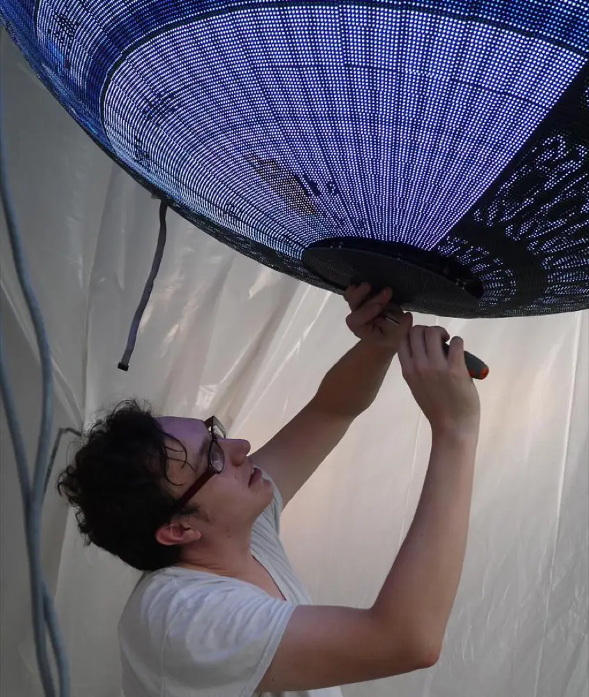
Woz builds electronics for art and live environments in Las Vegas. His work includes custom PCBs, LED control systems, MIDI hardware, and interactive exhibits.
Open woz.lolCustom PCBs and Firmware for Entertainment Industry Solutions
MIDI Performance Automator
View Project
Tiny MIDI Adapter & Router
View Project
Game Boy Advance MIDI Adapter
View Project
Game Boy MIDI Adapter
View Project
Open-source RP2040 USB MIDI host, looper & router
View Project
SMS alarm with a low power and a high power processor
View Project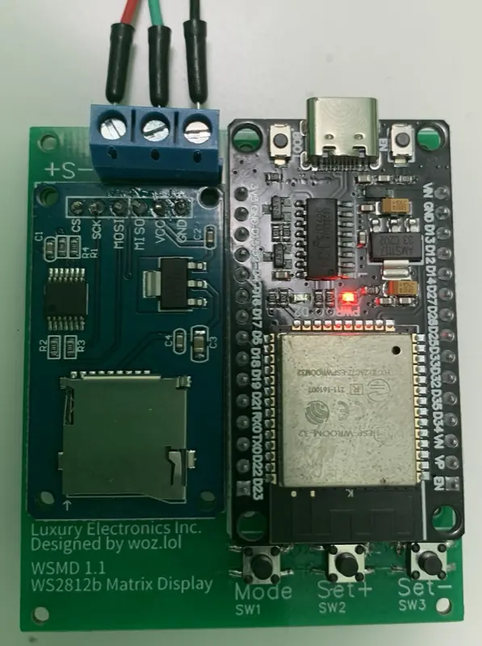
SD card GIF player with Bluetooth control and configurable panels
View Project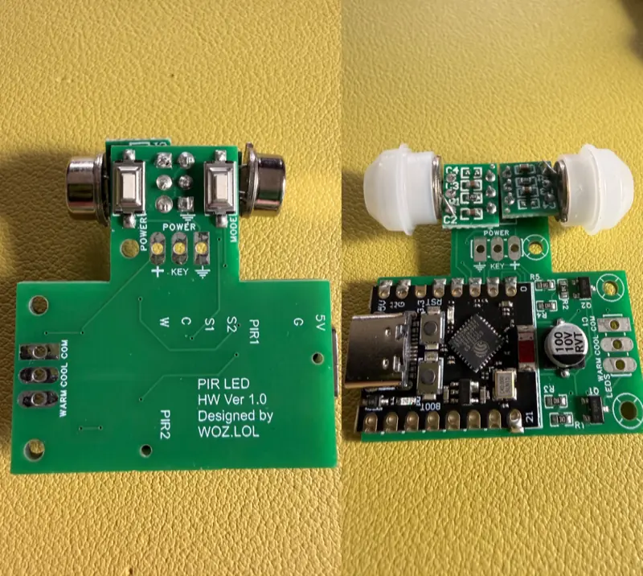
Power-saving Synchronized LED Closet Light Controller
Touchscreen and Wi-Fi tester with short circuit detection
View ProjectPCB / 05
A scrolling text roll-up display in a crowd control stanchion, and multiple stanchions can be linked for live messaging. I handled component sourcing, schematic updates and PCB design, and I manage end-to-end PCBA procurement and fulfillment.
View Project
PCB / 06
A credit-card-sized REM pod. A durable integrated antenna radiates EMF to detect anything nearby, at a low price.
View ProjectSelected installations from wozLED, including Adore Miami and Caesars Palace Las Vegas.
Open wozLED Gallery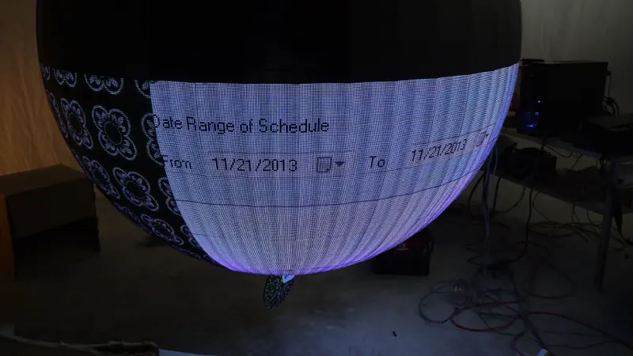
Round LED display installation.
Custom-shaped LED cube sculpture.
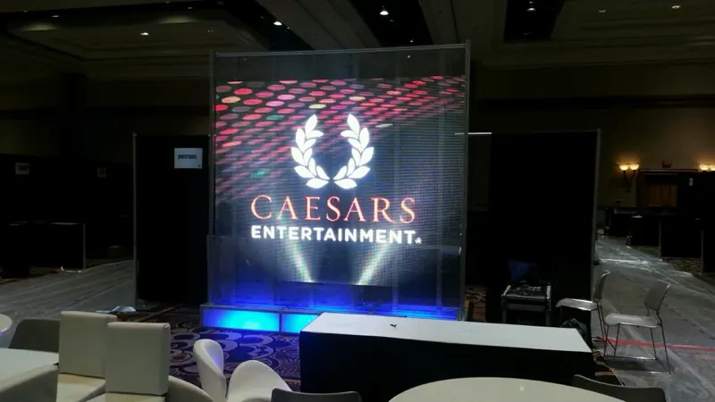
Transparent display for the Bellagio TEAMS Expo.

I built the browser-based UX and the control hardware for POLIFORCE rear window signs. They show preset messages, lightbar patterns and traffic advisor chevrons chosen from a dash touchscreen.
View ProjectProjects that combine electronics with performance, sound, and public space.
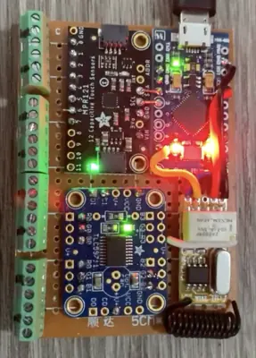
01 / Magician Projects
Custom devices and mechanisms for durable consistent stage magic.
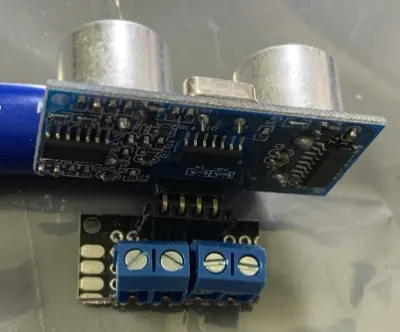
02 / Lumin & Forge Museum Exhibit
Ultrasonic distance sensors trigger audio files as visitors walk through the exhibit.

03 / Hot Rod MIDI Controller
A MIDI controller keyboard customized for Kevin Luu, with an optical hand sensor and animated under-key lights.
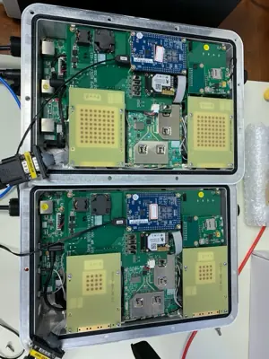
04 / 5G Repeater System
Worked with SOLID to create a browser-based interface to remotely set up and configure a 5G repeater system for cell phone stations.

05 / SpiritData App
Face and body tracking with live speech captions for paranormal investigations. Output comes straight from Apple Speech Recognition and open libraries, unaltered, and an open-source web version is on GitHub for validation.
Responsive front-end projects built with HTML, CSS, JavaScript, and AI-assisted workflows.
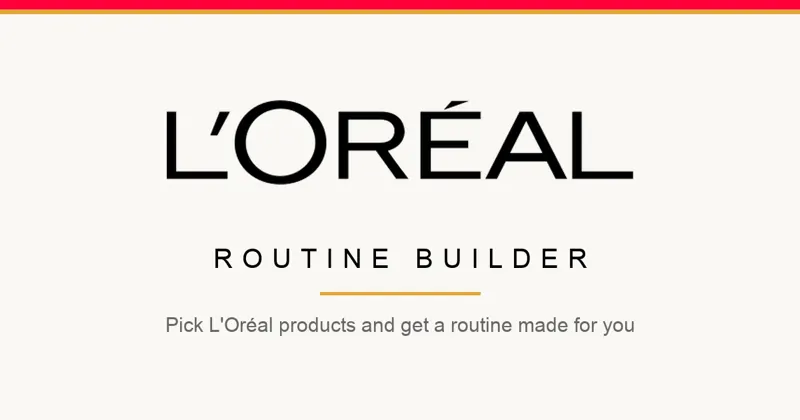
An AI advisor that turns the L'Oréal products you pick into a routine, then answers your follow-up questions.
Pick products from a searchable catalog and the advisor builds a routine from them. Every product links out, and it suggests a couple more L'Oréal products to round the routine out. The soft, glossy look has a sheen that follows your cursor.
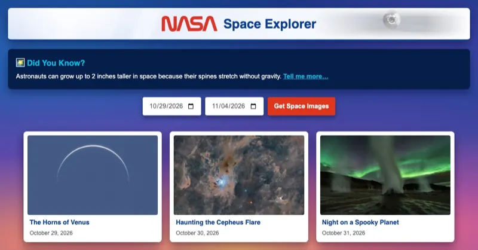
Browse NASA's Astronomy Picture of the Day for any date range, on a phone or a desktop.
A gallery that pulls live data from NASA's APOD API. The dusk-themed, Vista-era look leans on shadows and neo-skeuomorphic touches instead of flat minimal design.
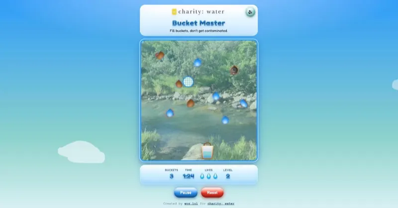
A browser game for charity: water, a bit like air hockey meets Tetris.
You are a bucket defending your buddy, a water filter. Run dirty water through the filter before you collect it, and bump into trash and you lose. The look is Frutiger Aero with a jiggly sheen.
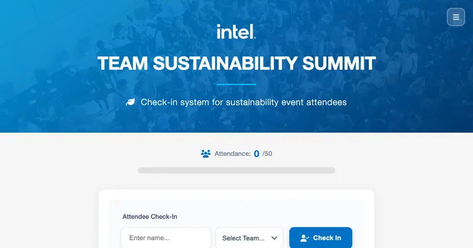
Event check-in that tracks attendance toward a goal of 50 and names the leading team.
Attendees check in with a name and a team (Water Wise, Net Zero or Renewables). It greets them, fills a progress bar, counts each team and celebrates when the goal is hit. Fully responsive, with biologically influenced interaction design and layered motion.
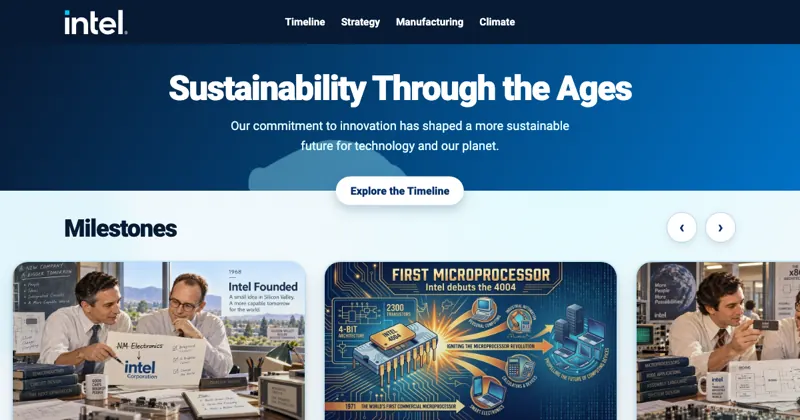
An interactive timeline of Intel's green history, from its 1968 founding to net-zero by 2040.
Nine milestone cards walk through the founding, the first microprocessor and the sustainability strategy, with Strategy, Manufacturing and Climate sections below.